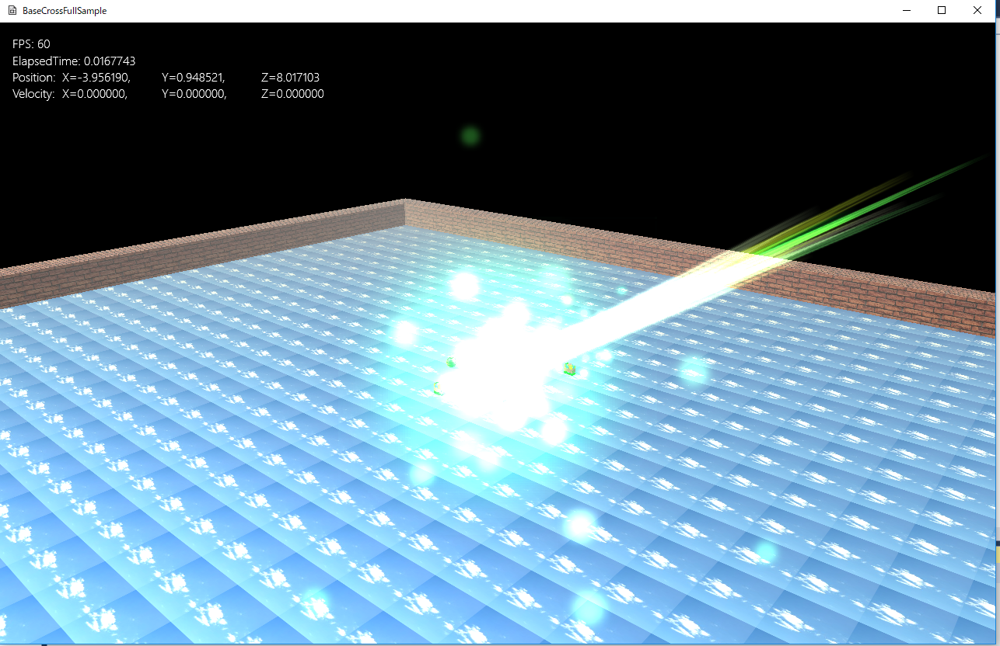

【includeファイル】 Compiled/include/Effekseer.h Compiled/include/EffekseerRendererDX11.h Compiled/include/EffekseerSoundXAudio2.h を、BaseCrossの Libs/include/Effekseer.h Libs/include/EffekseerRendererDX11.h Libs/include/EffekseerSoundXAudio2.h としてコピー。 【libファイル（デバッグ用）】 Compiled/lib/VS2015/Debug/Effekseer.lib Compiled/lib/VS2015/Debug/EffekseerRendererDX11.lib Compiled/lib/VS2015/Debug/EffekseerSoundXAudio2.lib を Libs/lib/Dx11/Debug/Effekseer.lib Libs/lib/Dx11/Debug/EffekseerRendererDX11.lib Libs/lib/Dx11/Debug/EffekseerSoundXAudio2.lib としてコピー。 【libファイル（リリース用）】 Compiled/lib/VS2015/Release/Effekseer.lib Compiled/lib/VS2015/Release/EffekseerRendererDX11.lib Compiled/lib/VS2015/Release/EffekseerSoundXAudio2.lib を Libs/lib/Dx11/Release/Effekseer.lib Libs/lib/Dx11/Release/EffekseerRendererDX11.lib Libs/lib/Dx11/Release/EffekseerSoundXAudio2.lib としてコピー。

図0113a
#pragma once
#include "EfkInterface.h"
#include "ProjectShader.h"
#include "ProjectBehavior.h"
//以下略
class GameStage : public Stage {
//エフェクトのインターフェイス
shared_ptr<EfkInterface> m_EfkInterface;
//中略
public:
//中略
//初期化
virtual void OnCreate()override;
//エフェクトのインターフェイスの取得
shared_ptr<EfkInterface> GetEfkInterface() const {
return m_EfkInterface;
}
//更新
virtual void OnUpdate() override;
//描画
virtual void OnDraw() override;
};
void GameStage::OnCreate() {
try {
//中略
//エフェクト作成
m_EfkInterface = ObjectFactory::Create<EfkInterface>();
//中略
//プレーヤーの作成
CreatePlayer();
}
catch (...) {
throw;
}
}
//更新
void GameStage::OnUpdate() {
m_EfkInterface->OnUpdate();
}
//描画
void GameStage::OnDraw() {
auto& camera = GetView()->GetTargetCamera();
m_EfkInterface->SetViewProj(camera->GetViewMatrix(), camera->GetProjMatrix());
m_EfkInterface->OnDraw();
}
class Player : public GameObject {
//エフェクト
shared_ptr<EfkEffect> m_EfkEffect;
//エフェクト実行オブジェクト
shared_ptr<EfkPlay> m_EfkPlay;
//中略
public:
//中略
};
void Player::OnCreate() {
//中略
//エフェクトの初期化
wstring DataDir;
App::GetApp()->GetDataDirectory(DataDir);
wstring TestEffectStr = DataDir + L"Effects\\test.efk";
auto ShEfkInterface = GetTypeStage<GameStage>()->GetEfkInterface();
m_EfkEffect = ObjectFactory::Create<EfkEffect>(ShEfkInterface, TestEffectStr);
//ステートマシンの構築
m_StateMachine.reset(new StateMachine<Player>(GetThis<Player>()));
//最初のステートをPlayerDefaultに設定
m_StateMachine->ChangeState(PlayerDefaultState::Instance());
}
//Aボタンハンドラ
void Player::OnPushA() {
if (GetStateMachine()->GetCurrentState() == PlayerDefaultState::Instance()) {
auto Ptr = GetComponent<Transform>();
//エフェクトのプレイ
auto ShEfkInterface = GetTypeStage<GameStage>()->GetEfkInterface();
m_EfkPlay = ObjectFactory::Create<EfkPlay>(m_EfkEffect, Ptr->GetPosition());
//サウンドのプレイ
auto XAPtr = App::GetApp()->GetXAudio2Manager();
XAPtr->Start(L"cursor", 0, 0.5f);
//通常ステートならジャンプステートに移行
GetStateMachine()->ChangeState(PlayerJumpState::Instance());
}
}